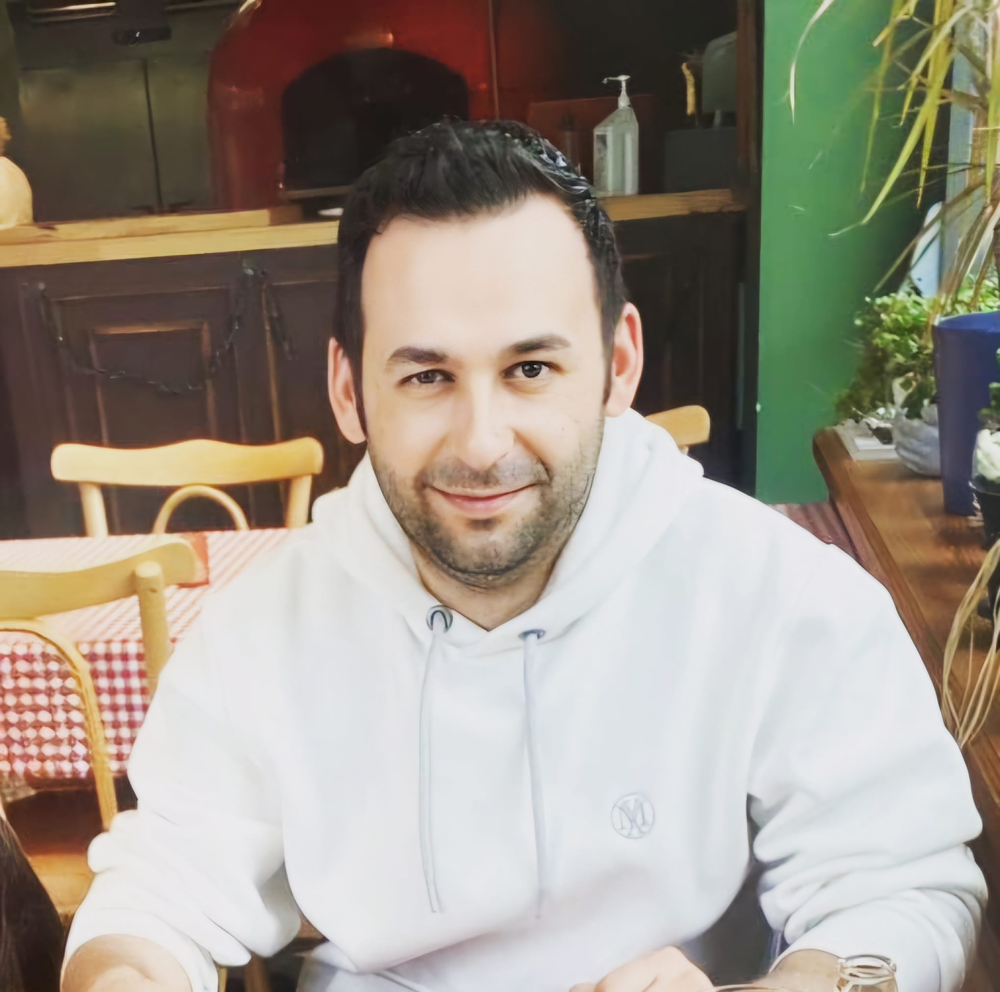

My Resume

Summary
Motivated Junior Backend Developer with a strong foundation in Java, Spring Boot, and SQL. Skilled in building RESTful
APIs, managing databases, and writing clean, maintainable code. Background in entrepreneurship and project management
brings a unique problem-solving mindset and communication edge. Eager to contribute to impactful tech projects and grow
within a dynamic development team
Education
Patika+ 6-month Fullstack Web Development Bootcamp Graduation Year:2025
Accepted into and graduated from one of Turkey's most selective and intense bootcamps.
Kyrenia American University Graduation Year:2012
Bachelor of Science in Political Science and Public Administration.
Work Experience
turkishlanguage.online, Eskisehir August 2024 – Ongoing
Founder and Admin
• Created a facebook group for foreigners whom learn turkish language with more than 145.000 members
• Created a Wordpress web page for selling online lessons and video lessons for group members
• Wrote a book for learners in beginner level
ETTOM, Osmangazi University, Eskisehir March 2022 – August 2024
At ETTOM, Osmangazi University’s Technology Transfer Office, I worked in the entrepreneurship department. My duties
included: • Providing entrepreneurship training and information to entrepreneurs.
• Setting up stands at fairs and events.
• Promoting center activities and enhancing visibility through materials like posters and brochures.
• Reviewing business plans, mentoring, and managing incubator office approvals.
• Organizing training sessions and working as an Entrepreneurship Specialist for
Skills
Programming languages:
Java , CSS, HTML, Javascript
Computer software/frameworks/technologies:
Microsoft Office, Adobe Premiere pro, Adobe Audition, Git, React, Blender,
Java SE, OOP, Collections, Exception Handling, Spring Boot, Hibernate ORM, PostgreSQL, Maven
Languages:
Turkish (Native), English (Fluent), Arabic (Upper-Intermediate)
Contact me!
My Hobbies